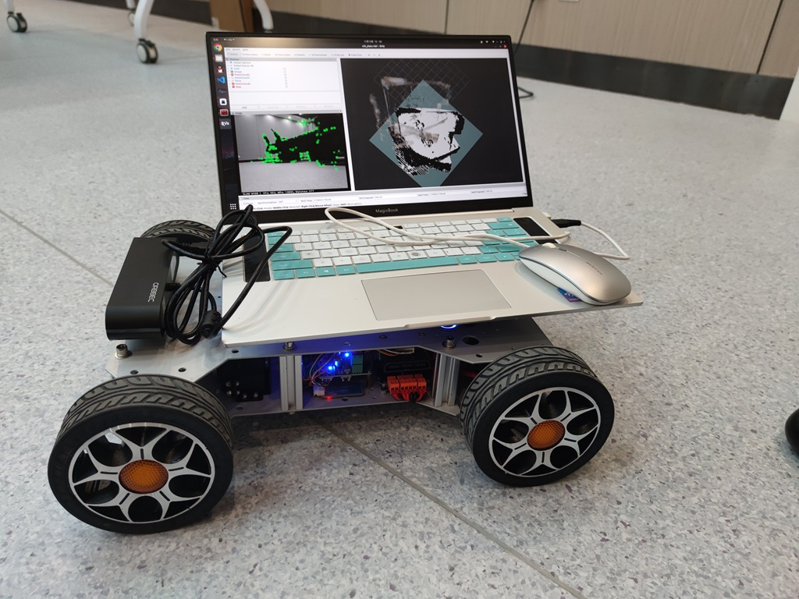
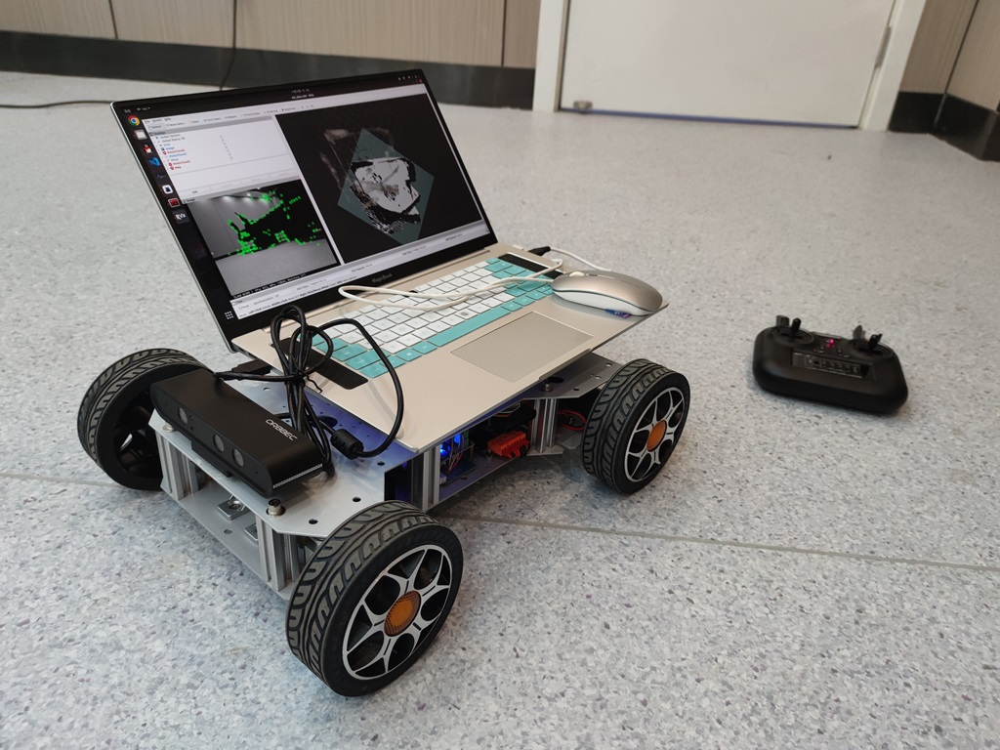
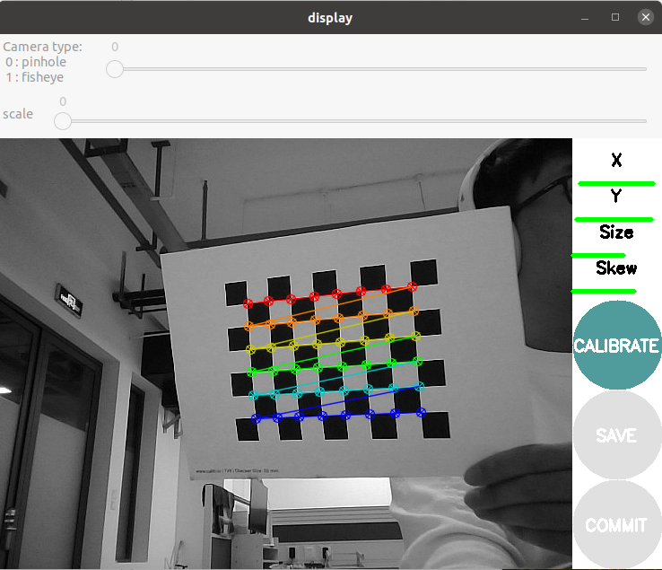
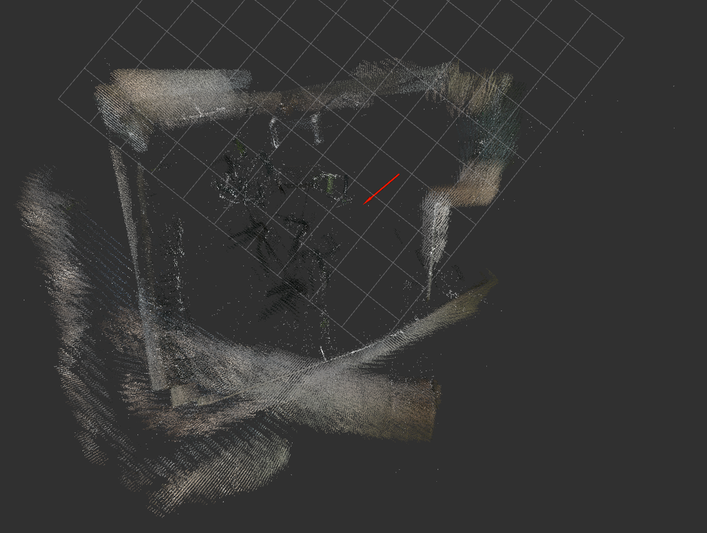
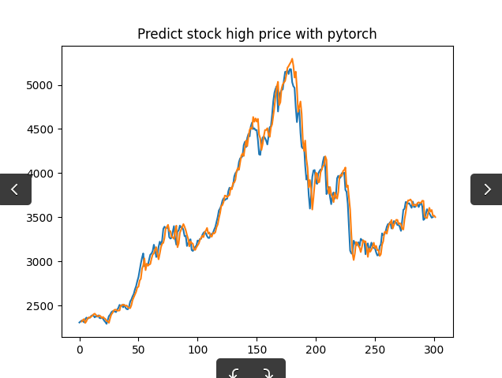
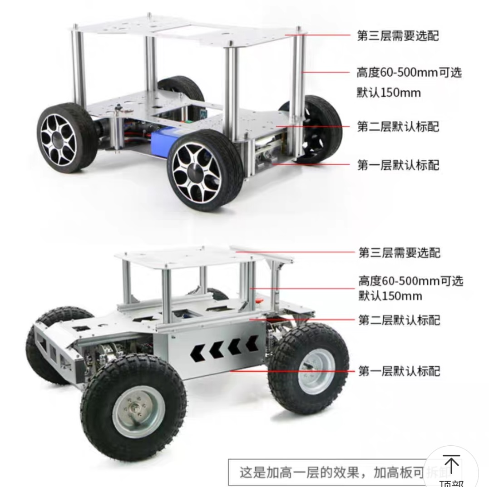

周报-001-19Nov2023
工作周报
时间: 2023-11-13 ~ 2023-11-18
一、本周做了什么
本周主要同步推进paper和硬件小车这两件事，主要有：
- Paper Reading：在 GNSS-Visual-Inertial-odometry(GVIO) 领域阅读文献多篇，其中精读3篇，并完成Reading Note（纸质），
- Paper Writing: 完成了论文的（通用）部分，主要包含：坐标系的转换描述、因子图原理、Introduction部分的骨架等。
- Code Reading: 捋完了GVINS的框架，将其作为Code-Baseline在这上面修改。
- 学习LSTM，并基于LSTM完成了一个股票数据的预测，算作入门。
- 调校小车：摸清了 传感器数据采集→STM32数据收集和转发→PC机（ubuntu+ROS）的全流程；将计算任务转移到个人PC上运行；在线运行ORB-SLAM2纯视觉建图效果一般但不卡；将小车部分的启动步骤、参数细节整理成了文档。
- 制作做CAC会议海报，来重庆开会。
二、有什么收获/启发/问题
2.1 Paper Reading - GVIO
详情在纸质版笔记上，供论文的Related Work部分使用。
2.2 Code Reading & Writting - GVINS
- 我详细阅读并注释了GVINS的代码，并已经push到我的github，链接：https://github.com/wxtcon/gvins_comments_by_damon
- 编写选星这部分算法代码，基于GVINS-Dataset测试，这会还没写完，预计下周写完并测试
2.3 调校小车
工作细节
尚未定位为什么在Jetson TX2上ORB-SLAM3非常卡（一核有难，三核围观）的原因，这个问题定位起来有点麻烦（暂缓）
鉴于问题1.难定位，我将工控机的所有任务转移到个人PC上进行，目前全流程已经打通（包括环境配置、代码编译测试、运行测试），现阶段小车长这样

使用camera-calibration工具完成了摄像头的标定，标定工具界面如下:
在PC上编译并运行ORB-SLAM2，在会议室进行纯视觉建图测试，

体素地图效果如下：

可以发现下面这块地图发生了较大的偏移，这是因为这块地方都是墙壁，特征点太少了，发生了退化将上述工作整理成了一个简单的文档备查
文档链接：www.damonai.cn/2023/11/15/Car-Info/
2.4 LSTM学习
学习LSTM原理，在服务器上跑了一个预测股票的demo，

之前没怎么搞过深度学习，正在补基础知识
三、下阶段怎么安排
- 计划用两天左右时间完成深度学习基础+RNN+LSTM扫盲
- 完成卫星选星算法代码的编写和效果测试（基于GVINS-Dataset）。
- 完成小车硬件升级：小车加高，先加一层50cm（200/层，已买），后续视情况判断是否再加一层(凑1m)

All articles in this blog are licensed under CC BY-NC-SA 4.0 unless stating additionally.